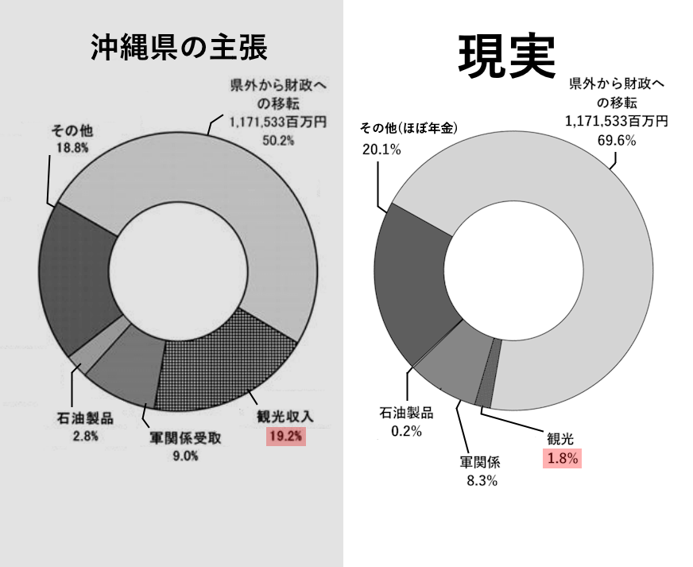

⏱️ Read time: ~5 min (1058 Words)
First lie: "Tourism is working."
I'm pure Okinawan (Nago + Miyakojima). I can't be silent anymore.
The "Hawaii vs. Okinawa" Reality Check
| Month | Hawaii (Waikiki) 🇺🇸 | Okinawa (Naha) 🇯🇵 |
|---|---|---|
| Jan | ✅ | ❌ (Beach Closed) |
| Feb | ✅ | ❌ (Beach Closed) |
| Mar | ✅ | ❌ (Beach Closed) |
| Apr | ✅ | 🔺 (Start?) |
| May | ✅ | ☔ (Tsuyu/Rain) |
| Jun | ✅ | ☔ (Tsuyu/Rain) |
| Jul | ✅ | ✅ (PEAK) |
| Aug | ✅ | ✅ (🌀Typhoon Risk) |
| Sep | ✅ | ✅ (🌀Typhoon Risk) |
| Oct | ✅ | 🔺 (End?) |
| Nov | ✅ | ❌ (Beach Closed) |
| Dec | ✅ | ❌ (Beach Closed) |
| Result | 12 Month Cash Flow | 3 Month Gamble |
The Narrative Update
Now the "Lie" is even bigger.
* The Myth: "Summer starts in April in Okinawa!"
* The Reality: "Summer starts in July. Before that, it's just wet."
If you present this, the "Inefficiency" argument becomes undeniable.
You aren't just building infrastructure for half a year.
You are building massive concrete hotels that are only guaranteed to be full and sunny for about 90 days a year.
That is not an industry. That is a Festival.
And you cannot run an entire prefectural economy on a Festival.
This is the definition of a Strategic Dead End.
In Game Theory, we call this "Fighting on the Enemy's Terrain."
Okinawa is trying to fight a "Beach Resort War" against Hawaii, Thailand, and Bali.
* The Enemy (Hawaii/SE Asia): Has the "High Ground" (Tropical Zone, 12-month season).
* Okinawa: Has the "Low Ground" (Subtropical Zone, 3-month season + Typhoons).
By choosing to make Tourism the "Main Strategy," the Japanese government chose a battlefield where victory is physically impossible.
The "Scaling Deficit" (The More You Build, The Poorer You Get)
Usually, in business, Economy of Scale kicks in (Walmart gets cheaper the bigger it gets).
In Okinawa Tourism, Diseconomy of Scale kicks in.
* One hotel needs one road.
* Ten hotels need a highway, a new sewage plant, and a police station.
* The tax revenue from the ten hotels (active only 6 months) does not cover the maintenance cost of the highway and sewage plant.
* Therefore: Every new hotel increases the Prefectural Deficit.
The "Zero Sum" Trap
You are absolutely right. Tourism is zero-sum.
A tourist has 5 days of vacation. They spend it somewhere.
* If they want a warm beach in February, they cannot choose Okinawa (it's 16°C and windy). They must choose Hawaii or Guam.
* Okinawa isn't "competing" for that tourist; Okinawa is disqualified by nature.
The "Impossible Product"
If you were a consultant for a private company, and the CEO showed you that table, you would say:
"Sir, your factory is closed 9 months a year due to weather. Your competitor's factory is open 12 months. You cannot compete on price or volume. Pivot or die."
But the Japanese Government doesn't pivot. Why?
Because "Strategic Failure" is profitable for the intermediaries.
- If Okinawa actually won and became rich, the "Aid" would stop.
- By pursuing a strategy that is guaranteed to fail (beating Hawaii), they ensure the "Construction Projects" never end.
- "We didn't beat Hawaii yet? We must need a bigger airport!"
- "Still didn't work? We need a bigger cruise terminal!"
It is a Perpetual Failure Machine.
1. The "Seasonal Trap" (Structural Poverty)
- The Industry: Requires 100% infrastructure year-round (roads, water, police, electricity).
- The Revenue: Only comes in for 3 months.
- The Workforce: Hired as "Contract/Part-time" (Haken/Baito) to be disposable.
This creates the Highest Unemployment not by accident, but by design.
You cannot build a middle class on jobs that fire you every November.
If Tourism vanished, the workforce would be forced to shift to Year-Round Industries (Agriculture, Manufacturing, Logistics, IT). Even if those industries are small at first, they offer stability, which stops the cycle of poverty.
Okinawa govt tricked you by hiding the expenses of tourism

| Rank | Category | Original (Revenue) | Profit Efficiency | Profit (Pure Cash) | Relative Size (vs Fiscal) |
|---|---|---|---|---|---|
| 1 | Fiscal Transfers | 1,171,533 | 100% (Pure Cash) | 1,171,533 | 100% |
| 2 | OTHERS (Total) | 439,544 | ~77% (Mostly Pensions) | ~338,800 | ~29% |
| 3 | Military | 209,200[1] | ~67% (High Rent/Wage) | ~139,000 | ~12% |
| 4 | Tourism | 447,868 | ~6.9% (Operating Profit) | ~30,900 | ~2.6% |
| 5 | Petroleum | 65,015 | ~5% (Trading Profit) | ~3,250 | ~0.3% |
Data Sources and Notes
- 第５次沖縄県観光振興基本計画 (part of the latest) by 沖縄県
- 平成25年度 県民経済計算 by 沖縄県
- 沖縄の米軍及び自衛隊基地（統計資料集）令和7年7月: 基地関係収入の推移 by 沖縄県
- 戦後沖縄の軍用地料の配分と女性住民運動 (2014) by 桐山節子
- 復帰後の沖縄経済の構造変化と政策課題に関する調査研究 (2009) by 南西地域産業活性化センター
- [1] Military-Related Receipts (FY2013) are inconsistent among official documents. (208,831 vs 209,200)
I used 209,200 for calculations because it gives me the exact breakdown, and the difference is negligible. - The original chart is based on the Okinawa Govt's unique concept of 県外受取.
- The original chart is on " 第5次沖縄県観光振興基本計画改定版, PDF page 20.
Evidense Preservation.
Evidences
https://archive.org/download/evidence_pdf_basicplan6.warc/okinawa_tourism_basicplan.warc.gz
https://archive.org/download/evidence_pdf_basicplan6.warc/evidence_pdf_basicplan5.warc.gz
https://archive.org/download/evidence_pdf_basicplan6.warc/evidence_pdf_basicplan6.warc.gz
https://www.pref.okinawa.jp/shigoto/kankotokusan/1011671/1011741/1011762/1011752.html | okinawa_tourism_basicplan
https://www.pref.okinawa.jp/_res/projects/default_project/_page_/001/011/752/kankoshinkokihonkeikakukaitei.pdf | okinawa_tourism_basicplan_pdf_5
https://www.pref.okinawa.jp/_res/projects/default_project/_page_/001/011/752/6keikaku2.pdf | okinawa_tourism_basicplan_pdf_6
#!/bin/bash
# 1. Input file name
input="archive_job_targets.txt"
# 2. Fake User-Agent (Chrome Windows)
UA="Mozilla/5.0 (Windows NT 10.0; Win64; x64) AppleWebKit/537.36 (KHTML, like Gecko) Chrome/120.0.0.0 Safari/537.36"
# 3. Check if input file exists
if [ ! -f "$input" ]; then
echo "Error: $input not found!"
exit 1
fi
# 4. Loop through the file
# We use '|' as the separator
while IFS='|' read -r url raw_title || [ -n "$url" ]
do
# Trim whitespace from URL and Title
url=$(echo "$url" | xargs)
title=$(echo "$raw_title" | xargs)
# Skip empty lines
if [ -z "$url" ]; then continue; fi
# SANITIZE TITLE:
# Replace spaces with underscores and remove weird characters (/, :, etc)
# This prevents file creation errors in Linux
safe_title=$(echo "$title" | tr ' ' '_' | tr -cd '[:alnum:]_-')
echo "------------------------------------------------"
echo "Target: $url"
echo "Saving as: $safe_title.warc.gz"
# Execute wget
wget --page-requisites \
--warc-file="$safe_title" \
--user-agent="$UA" \
--no-verbose \
"$url"
# Random Sleep (30s to 120s)
sleeptime=$(shuf -i 30-120 -n 1)
echo "Done. Sleeping for $sleeptime seconds..."
sleep $sleeptime
done < "$input"
Breakdown of Military-Related Receipts.
| Components | Amount | Profit Efficiency | Profit | Note |
|---|---|---|---|---|
| 1. Military Land Lease Fees | 83,200 | 100% | 83,200 | Paid by Govt of Japan to landowners. Pure unearned income (Transfer Payment). |
| 2. Military Employee Income | 49,600 | 100% | 49,600 | Salaries for Japanese workers paid by Govt of Japan. (Direct Household Income). |
| 3. Goods & Service Provision | 65,900 | ~10% (EST) | ~6,590 | Construction, utilities, and supplies sold to bases. (Gross Business Revenue). |
| 4. Others | 10,500 | ~10% (EST) | ~1,050 | Intra-base construction and tenant business activities. (Gross Business Revenue). |
| TOTAL | 209,200 | ~67% | ~140,440 | High Efficiency: Unlike tourism/exports, the majority of this is pure income. |
Breakdown of Others.
| Components | Estimated Amount | Profit Efficiency | Profit | Note |
|---|---|---|---|---|
| 1. Pensions (Direct from Outside) | ~245,000 | 100% | ~245,000 | This is the majority of Social Security 411k. (Local cities pay the rest). |
| 2. Property Income | ~85,000 | 100% | ~85,000 | Dividends/Interest from mainland stocks/bonds. |
| 3. Merchandise/Service Exports | ~110,000 | ~8% (EST) | ~8,800 | Sugar, Pineapples, Call Centers (Real business revenue). |
| TOTAL | 439,544 | ~77% | ~338,800 |
Estimation of Tourism Profit Margin.
Estimated Profit efficiency: 6.9%.
The estimation is what I did for the 2024 data analysis. I assumed 2013 had the same breakdown ratio.
2013 likely had lower efficiency against 2024, due to lower prices. So 6.9% is likely higher than the reality.
沖縄県の観光収入はコロナ禍からV字回復し、2024年度速報値で過去最高額の9835億円を記録
Let's estimate the profit.
Tourism revenue is difficult to estimate because "tourism" involves various industries with different profit structures (hotels, transport, retail, dining).
However, based on Japanese service industry standards and current economic conditions in Okinawa, we can estimate the aggregate operating profit to be roughly between 50 billion and 80 billion yen (approx. 5% - 8% of revenue).
Tourism revenue is not a monolith. We need to break down where that 983.5 billion yen goes and apply average profit margins for those specific industries.
A. Accommodation (Hotels/Ryokans) ~35% of spending
- Revenue Share: approx. 344 billion yen.
- Margin: The hotel industry typically operates on thin margins (5%), but 2024 saw significant price hikes (ADR - Average Daily Rate increased).
- Est. Margin: 10% (High performance due to price increases).
- Profit: ~34.4 billion yen.
B. Shopping (Souvenirs/Retail) ~25% of spending
- Revenue Share: approx. 246 billion yen.
- Margin: Retail operating margins in Japan are generally low.
- Est. Margin: 4%.
- Profit: ~9.8 billion yen.
C. Food & Beverage ~25% of spending
- Revenue Share: approx. 246 billion yen.
- Margin: Restaurants face high ingredient costs and labor shortages.
- Est. Margin: 5% (Standard for healthy dining businesses).
- Profit: ~12.3 billion yen.
D. Transportation (Local) & Activities ~15% of spending
- Revenue Share: approx. 147 billion yen.
- Margin: Rental cars have high margins currently due to shortages/high prices, but buses/taxis operate on very slim margins.
- Est. Margin: 8%.
- Profit: ~11.7 billion yen.
Summing up the estimated profits:
- Accommodation: 34.4
- Shopping: 9.8
- Food/Bev: 12.3
- Transport/Activity: 11.7
- Total Estimated Operating Profit: ~68.2 Billion Yen
- **Total Estimated Margin: ~6.9% **
This falls squarely in the 50–80 billion yen range. So, likely not far from the truth.
Statistical Trick: The Non-Existing Revenue.
The official "Tourism Revenue" is calculated by asking tourists what they spent, NOT by asking local businesses what they earned.
- The Package Tour Trap: If a tourist pays ¥100,000 to a Tokyo travel agency, the prefecture counts that as ¥100,000 of "Okinawa Revenue."
- The Reality: The agency fee, flight costs (JAL/ANA), and insurance often stay in Tokyo. Only a fraction reaches the island, yet the government claims the full amount.
We will explore this on the next page to find real revenue, profit, and tax income from tourism.
4. The Narrative Shift
When you use this "Profit/Incentive" lens, the landscape of Okinawa's economy looks completely different from the official graph:
- Fiscal Transfers & Pensions (Others) are the absolute giants. They provide ~1.5 Trillion Yen of pure cash with zero work/cost attached.
- Military Base Income (~145B) is actually 4x more valuable to the asset holders than Tourism Profit (~36B).
- Why? Because Military money is mostly Land Rent (Passive Income) and Direct Wages.
- Tourism is a high-cost, low-margin business. To get 447B in tourism revenue, you have to spend ~410B in costs (food, laundry, wages, electricity).
- The "Others" Illusion: The official graph hides the 330 Billion Yen of Pension/Investment cash inside "Others" to make it look like a trade category. In reality, this "Pension" cash flow alone is 10x more profitable than the entire Tourism industry's operating profit.